지역
"영농형 태양광 지어 놓고 전기를 못 보낸다"…전남광주시의회, 2028년 말 준공 서영광변전소 앞당기라 주문
박원종 위원장, 영광 월평마을 등 계통 접속 지연 사례 제시…시 "한전과 협의 중, 햇빛소득마을은 ESS·가상발전소 연계 컨설팅"
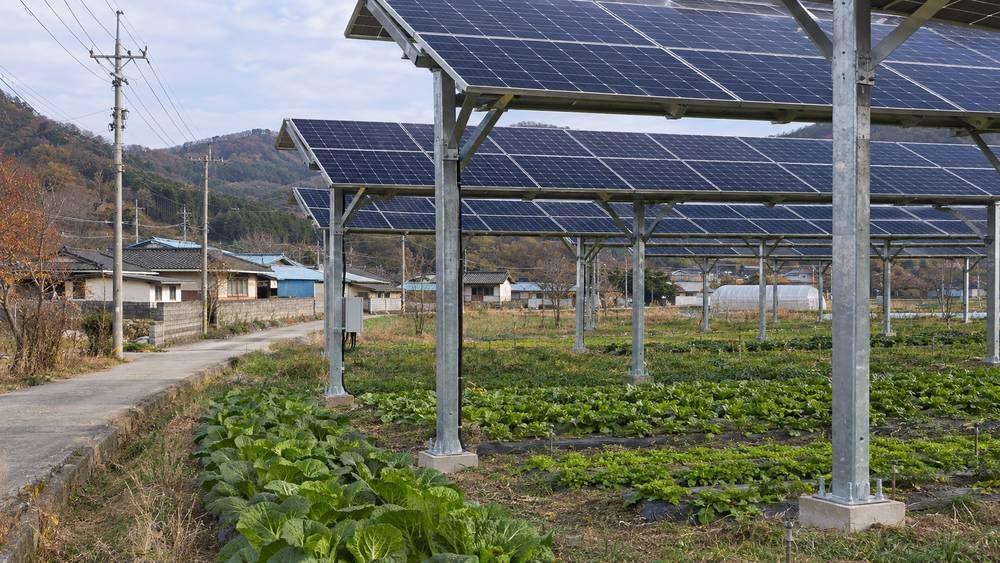
대전 한밭종합운동장 공영주차장 태양광, 국비 공모 뽑히고도 지방비 없어 포기…시의회 "사업비·용량 자료마다 달라"
박은희 시의원, 시설관리공단 행정사무감사서 "총사업비 6억 원 기준 서류 금액 제각각"…투명한 업체 선정 절차 주문

울주군 구영공원 공영주차장 태양광 17일 착공…20m 앞 아파트 주민 "빛 반사 우려, 철회하라"
군 "반사율 5.3% 패널·기울기 9도, 절차 모두 지켜"…주민 "군이 입법예고한 주택 이격 200m의 10분의 1"

재생에너지 자립률 1.2% 여수, 태양광 주택 이격거리 300m→200m로…도로 이격 100m 규제는 없애 17일 본회의
상위법령 9월 18일 시행 두 달 만에 도시계획 조례 개정안 상임위 원안 가결…"100m까지 더 낮추자" 요구에 시는 "민원 많아 단계적으로"
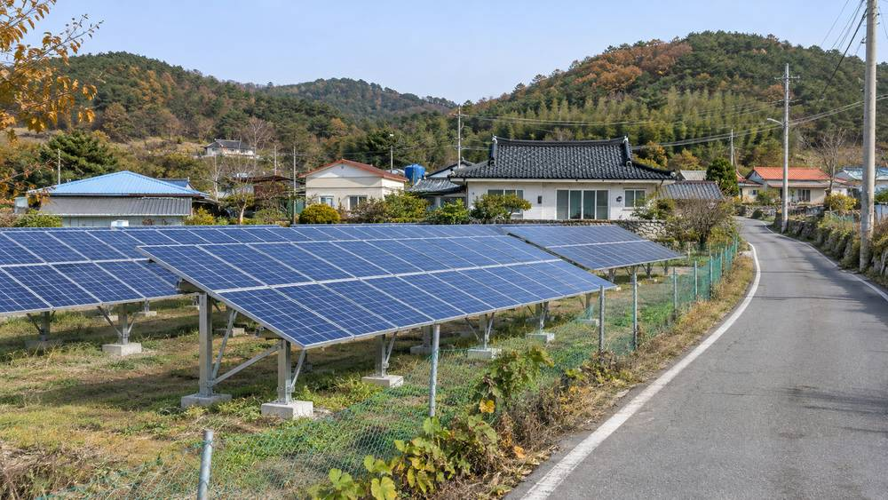
김해 공영주차장·학교·산단에 태양광 늘리고 수익은 시민에게…시의회 토론회서 "설치 가능 부지부터 조사하자"
1,000㎡ 넘는 공영주차장 태양광 의무화 앞두고 16일 시민토론회…김해, 경남 18개 시·군 중 전력 사용량·주차장 태양광 잠재량 모두 2위

전북농업기술원, 농업진흥구역에 영농형 태양광 설치하며 농지법 절차 빠뜨려…도 감사서 12건 행정상 처분
2023년 실증 설비 세우며 농지 일시사용 협의·개발행위허가 안 받아…연구실 안전관리 부실·외부 강의 미신고로 219만5,000원 회수

안성시 '공유부지 주민참여형 태양광', 참좋은 지방자치 정책대회 수상…체육시설·공영주차장에 시민 협동조합 발전소
13일 국회 사랑재에서 시장·군수·구청장협의회장상…인근 마을 참여·수익의 마을복지 활용을 심사 기준으로, 앞으로 가상발전소로 관내 기업에 싼 전기 공급 구상

인천 영종구, 내년 주택·상가 등 227곳에 태양광·지열 설치비 최대 80% 지원…'재생에너지 융복합지원사업' 국·시비 26억2,000만 원 확보
총사업비 41억9,000만 원 중 보조금 35억3,000만 원, 태양광 192곳·태양열 7곳·지열 28곳…내년 2월 본격 추진

아산시, 태양광 주거지 이격거리 500m→200m로 줄이고 도로 이격 없애…주민 동의 사업은 더 완화
도시계획 조례 개정, 진입도로 포장·축사 등 건축물 위 태양광 기준도 풀어…햇빛소득마을 8곳 추진 중, 삼성 투자 따른 전력 수요 대비
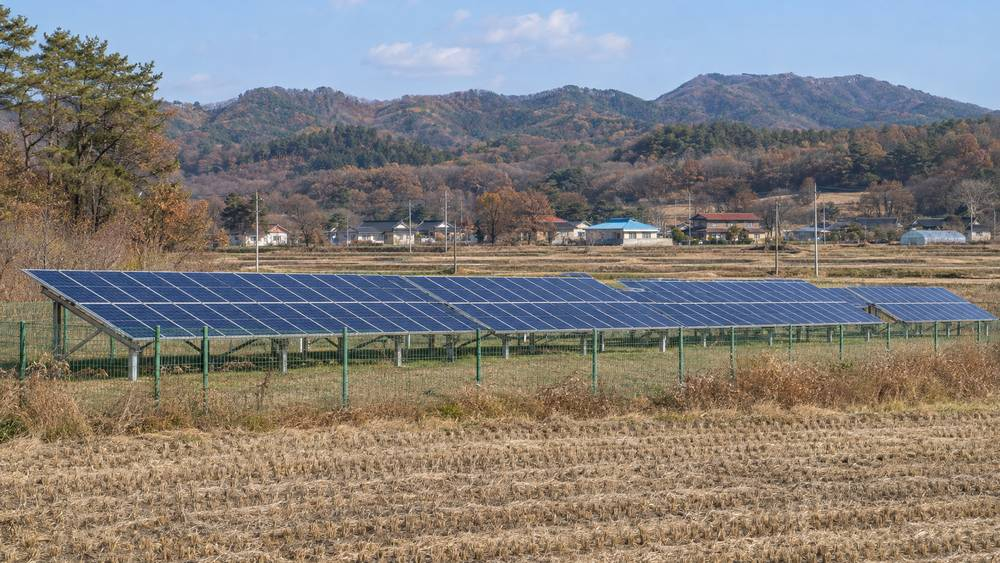
광주 광산구, 온실가스 줄인 아파트 6곳에 3,600만 원…LED 교체·태양광 설치 지원
탄소중립포인트제 가입률·주민 실천 평가해 선정, 500세대 이상 부문 대상 신창도시공사 국민임대아파트 1,100만 원

충청권 지나는 국가기간 송전망 27개 사업…"전력은 수도권으로, 누적 부담은 지역에" 주민 요구 커져
전국 99개 중 대전·세종·충남 관련 27개, 새만금2~신서산 약 121㎞ 등 2030~2036년 준공 목표…정부 '철탑 최대 2,214기 감축' 방안에도 마을별 부담·지중화 구간 기준은 아직

보령시 "서해안 에너지고속도로 신규 송전선로 원칙적 반대"…청라·미산·성주면은 345kV 3개 노선 모두 지나
철탑 270기·130기·230기 계획…탈석탄 지역 송전 여유 활용·지산지소·경과지 계통연계 우선권 요구

옹진군수 "섬 재생에너지, 계통 연결이 가장 큰 과제"…영흥 내7리 햇빛소득마을 재추진
백령도 7월 정전 2,600가구 최대 8시간…해상풍력 배후항만·송배전망 준비 늦어 "정부·인천시·군 함께 풀어야"

나주호 수상태양광 시행자 "20년간 373억 원 지역 환원"…반대 측은 "둘레길 경관 지켜야"
97.8MW 가운데 19.56MW를 상생 기여분으로, 다도면 주민 1,700명 대상…서산 대호호는 누적 발전수익 53억8,700만 원

음성군 공영주차장에 태양광…한전KDN·충북개발공사 SPC가 짓고 수익은 취약계층 지원에
10일 3개 기관 업무합의, 사업비는 특수목적법인 '충북솔라링크'가 조달해 군 재정 부담 줄여
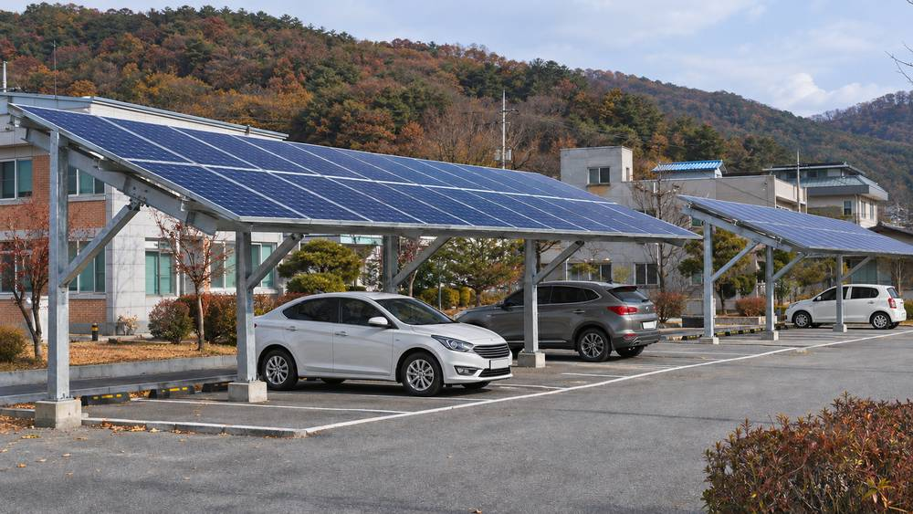
美 캘리포니아 휴니미항, 913kW 주차장 태양광 가동…항만은 초기 비용 없이 연 140만kWh
차량 대기 구역 위에 지붕형 발전소…250가구 쓸 전기, 2030년 항만 운영 무배출 목표에 보탬

울산 750MW 부유식 해상풍력 '문무바람' 모회사, 25일 청산 여부 주총…자금 확보가 관건
스웨덴 헥시콘, 이사회는 존속 제안했지만 '운영자금 조달 중대한 불확실성' 명시…감사인은 의견 내지 않아

영국 코번트리시, 에온과 그린벨트에 25MW 태양광 추진…시의원들 "에온이 얼마 버는지 공개하라"
7,000가구분 전기·사업비는 에온 부담, 시는 소유 땅 임대료와 전력 구매 검토…두 번째 단지 부지도 물색

전북도, 계통 포화에 ESS·가상발전소 사업모델 찾는다…"햇빛소득마을도 접속 막혀"
LS일렉트릭 등 기업·한전 전북본부와 간담회…유연접속·선로 ESS 정책을 도내 사업과 잇는 방안 논의

함안군, 지방공사와 손잡고 공영주차장 3곳에 태양광…2027년 착공·2030년 준공 목표
주차구획 1,000㎡ 넘는 공영주차장 재생에너지 의무화 대비…군은 행정 지원, 공사는 설치·운영 맡아

박찬대 인천시장, 오스테드 경영진 만났지만…어민들 "협의체 끊고 시장만 독대" 반발
1.47GW 인천해상풍력 허가 3년째 답보·입찰 보류…환경단체 "전담조직부터", 시 "구체 논의 없던 인사 자리"

전북도, 꽉 막힌 계통 뚫으려 ESS·가상발전소 기업과 손잡는다…"햇빛소득마을도 접속이 관건"
LS일렉트릭·한전 전북본부 등과 사업모델 간담회, 송·변전설비·ESS 확충 과제는 국가계획 반영 건의

함안군, 공영주차장 3곳에 태양광…지방공사가 설치·운영 맡아 2030년 준공 목표
함주공원·함안스포츠센터·칠원 구성지구 대상, 주차구획 1,000㎡ 넘는 공영주차장 설치 의무 앞서 대응


日 프로축구 J1 미토, 버려진 농지에 영농형 태양광…道の駅 전기 30% 대고 2년째 흑자
이바라키현 시로사토정 2,000㎡에 67.2kW, 20년 고정가 전력구매계약…J리그는 클럽당 최대 1,000만 엔 재생에너지 지원
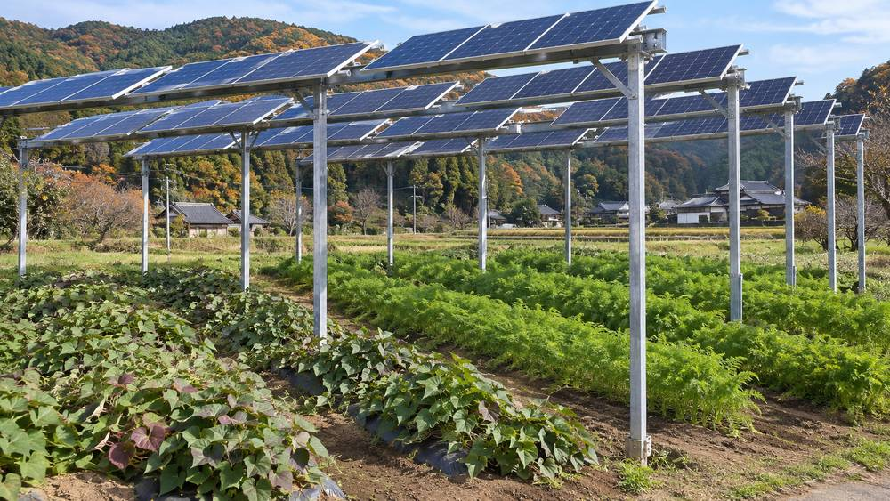
서울에너지공사, 흑자 돌아섰지만 고객만족도는 79.4점…시의회 "LNG 의존 벗어나 주차장 태양광 넓혀야"
위성찬 서울시의원 행정사무감사서 지적…공영주차장 40곳 입지조사 차질 없이, 대형 민간 주차장과도 협의 주문

전남광주도시개발에너지공사 본사 어디로…전남개발공사 노조 "무안에", 광주도시공사 노조 "조례도 안 됐는데 시기상조"
22개 산하기관 11곳으로 통합 추진…7개 기관 조례안 다음 달 16일까지 정례회에서 심사
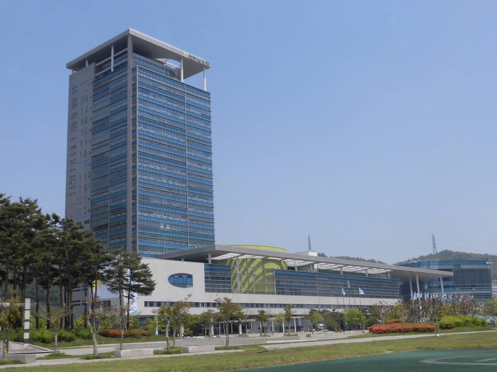
경남 학교 366곳 태양광 497기, 작은 건 3kW·큰 건 563kW…도의회 "188배 격차, 저용량·노후 설비 손봐야"
평균 68kW…경남도의회 교육위, 행정사무감사 마지막 날 교육청에 개선 방안 요구

제주 해상풍력 목표 10GW→5GW로 낮췄지만…도의회 "추자 전력 전남행, 도민 이익은 어디로"
위성곤 지사 "새 단지는 도가 정하고 주민 동의 최우선"…전송망 경로·연관 산업 육성 놓고 도정질문 공방

美 쿠야호가 카운티, 매립지 태양광 넓히려 750만 달러 빌린다…지자체 협의체 NOPEC이 어음 매입
원금은 연방 세액공제로 갚을 계획, 돈 늦으면 재산세 과세권으로 담보
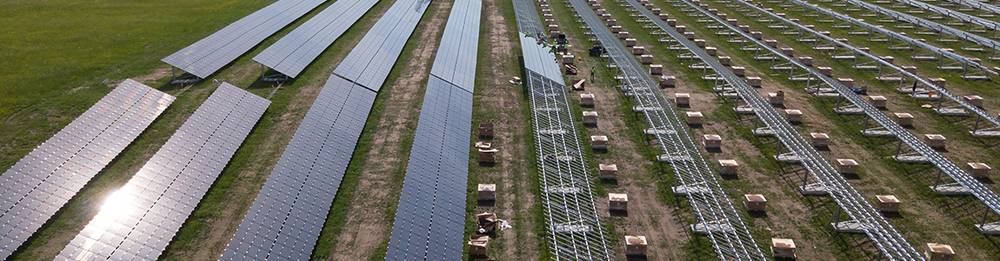
남원시의회 노현이 의원, 공영주차장 태양광 수익 시민에게 돌리는 조례 발의 추진…토론회서 협동조합 모델 논의
10일 '공영주차장 햇빛에너지 주민소득화 방안 토론회'에 시민·전문가 30여 명…전주시 에너지센터·환경운동연합·공동체지원센터 발표
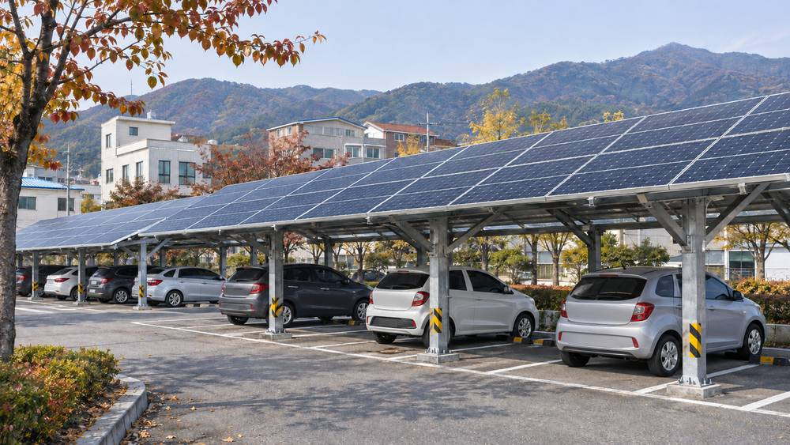
필리핀 케손시, 2년 안 돼 태양광 용량 73% 늘려 58.55MW…시청·공립학교·시립병원 지붕부터 깔았지만 가정 보급은 1%도 안 돼
싱크탱크 ICSC 위성·기계학습 분석, 95% 넘게 지붕형…지붕 잠재량 4,916MW, "가정·소상공인 초기 비용 덜어 줄 금융·인허가 필요"

서울에너지공사 지난해 태양광 사업 집행률 77%…최두호 시의원 "노후 설비 교체·도심 태양광 확대 연차별 실행계획 내라"
공사 "운영 끝난 발전 부지 넘겨받아 고효율로 바꾸고 공영주차장 태양광 단계적 확대"…전기차 충전기 위탁업체 임금 체불로 관리 하루 멈춘 일도 질타

강원도 108억 원 현물출자한 대관령 풍력단지, 연 순이익 3억 원 그쳐…도의회 행감서 "경제성·주민 피해 다시 따져야"
강원개발공사 운영 단지 예상 매출 21억 원…유지보수·인건비 오르면 수익 더 줄 수도, 소음·저주파·그림자 깜박임 등 사회적 비용도 거론

서울 학교 3곳 지붕 시민햇빛발전협동조합 태양광, 사용료 1,470만 원 밀려…학교마다 대응 제각각
서울시의회 행정사무감사서 지적…인헌고는 사용허가 취소, 상원초는 독촉 공문만 11차례, 협동조합형 20개교·민간형 12개교 안전점검 요구
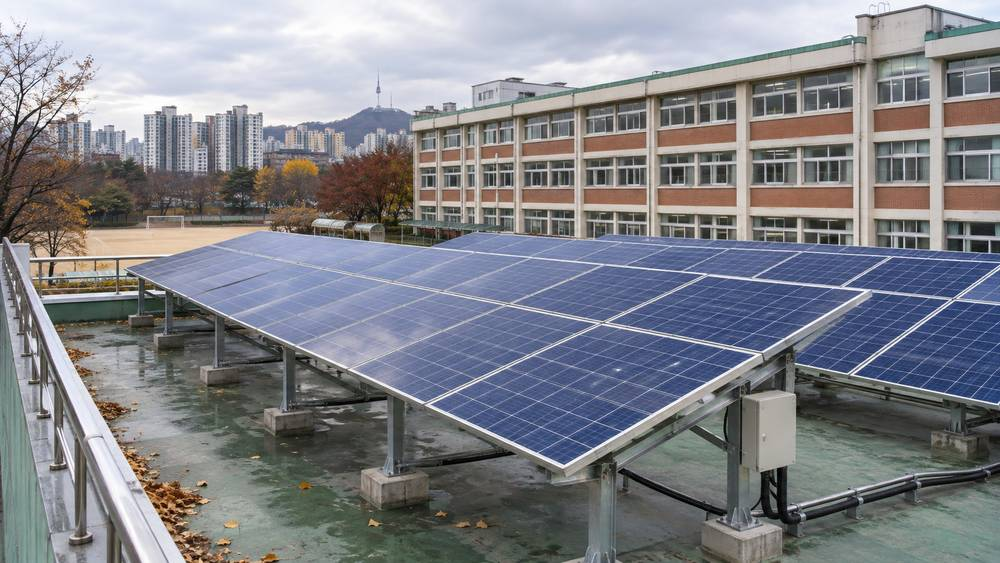
해남 혈도 간척지 400MW 국내 최대 태양광, 착공식 석 달 지나도 공사 흔적 없어…주민 160여 명 "매립면허 무효" 행정소송
주민 몫은 발전사업비 4%까지…해남 간척지 대형 태양광 11건 1,785MW, 군은 "연말까지 이익 환원 세부 지침"
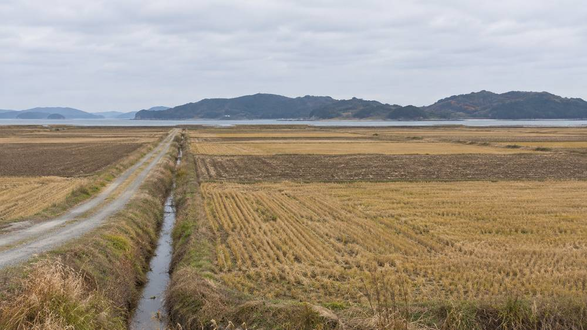
여수시, 유인도 40곳 에너지 전환 '2030 RE40' 추진…2027년부터 섬에도 공공부지 태양광·햇빛소득마을
계통 연계 섬 25곳·미연계 섬 15곳 맞춤 이행안…디젤 발전 줄여 섬 주민 전기요금 부담 낮춘다

일본 규슈, 영농형 태양광 5년 새 4.4배…전국 설치 농지 24%는 수확 2할 넘게 줄어 정부가 허가 조건 강화
후쿠오카 야메 차밭은 차광 시설에 패널 얹어 월 7만~8만 엔…농수산성 '차광률 30% 미만·연 판매 50만 엔 이상' 새 조건에 업계 "일률 규제 지나쳐"
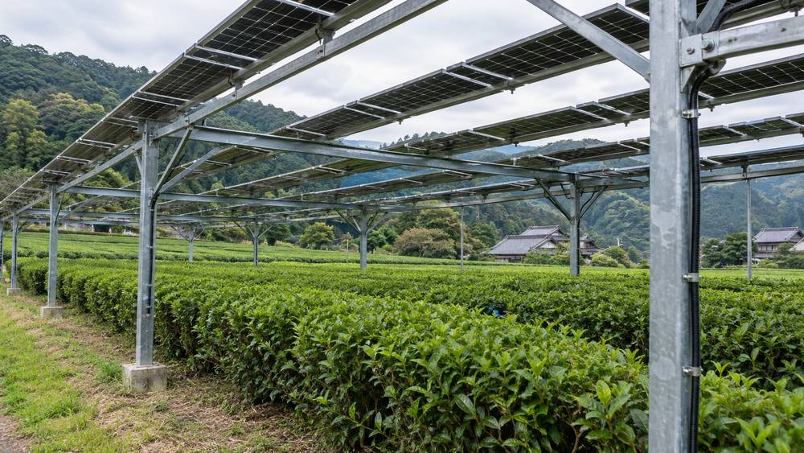
시흥형 RE100, 산단 소상공인 1,068곳이 전자투표로 지붕 태양광 결정…20년 햇빛소득 180억 원 기대
스틸랜드 1만2,613kW·찬성 86%, 시민협동조합 주차장 발전소 394kW 가동…태양광 허가용량 2023년 말 44MW→129MW

콜로라도 첫 플러그인 태양광 비영리단체 출범…세입자·관리조합 규약 보호 주 법 시행 앞두고
솔라 액세스 콜로라도 9일 출범…HB26-1007, 설치를 합리적 이유 없이 막지 못하게 규정

BHESCo, 이스트본 전역으로 '태양광 동네' 사업 확대…전기요금 최대 25% 낮추기 목표
주택 소유자·세입자·지역 사업장 모두 대상…오프젬 에너지 보상 기금으로 운영

셰틀랜드 지역에너지 활동가들 "스코틀랜드 지역에너지 지원금, 여러 해에 걸쳐 주도록 바꿔 달라"
가을에 배정받은 CARES 자금은 이듬해 3월 중순까지 써야…큰 사업을 쪼개 공사가 겨울로 밀려


독일 '에너지 셰어링 연합', 이웃끼리 태양광 전기 나누기 막는 걸림돌 없앨 11가지 제안…"배전망 회사에 처리 기한과 불이익을"
6월부터 법으로 허용됐지만 정산 절차·스마트계량기 보급 지연·높은 비용에 막혀…협동조합·시민에너지 단체엔 "너무 복잡하거나 수지가 안 맞는다"

'맨발 대학' 설립자 벙커 로이 별세…학교 문턱도 못 간 시골 여성들을 태양광 기술자로 길러 낸 81년
1972년 인도 라자스탄 틸로니아에 세운 학교에서 배운 여성들이 고향 마을로 돌아가 태양광 조명 설치·운영·정비…여러 나라 여성들도 와서 배워

아일랜드 코크 이웃들, '솔라 메할'로 지붕 태양광 함께 설치…먼저 한 단지는 가구당 한 해 약 1,000유로 아껴
이웃이 함께 큰일을 치르는 전통 '메할(meitheal)'을 태양광 공동구매에 접목…자원봉사 모임 '노스사이드 솔라', 단지마다 다시 쓸 수 있는 방식 만들어 북부 지역에 넓힐 계획

충북개발공사, 음성군 공영주차장에 첫 공공주도형 태양광…발전 순이익 50% 20년간 군에 돌려준다
한전KDN과 함께 세우는 특수목적법인 '충북솔라링크'가 캐노피형 설비 운영, 군은 부지·행정 지원…'충북형 표준모델'로 도내 다른 시·군에 넓힐 계획

호주 연구진 "재생에너지 지역 혜택, 반짝 지원 말고 오래 남는 유산으로"…지역기금 2030년 2억1,300만 호주달러 전망
시드니공과대 분석 "지역 고용 효과 아직 뚜렷하지 않아"…원주민 지분·수익 5% 공유 입찰, 지역 훈련, 영농형 태양광 계획 인정 제안
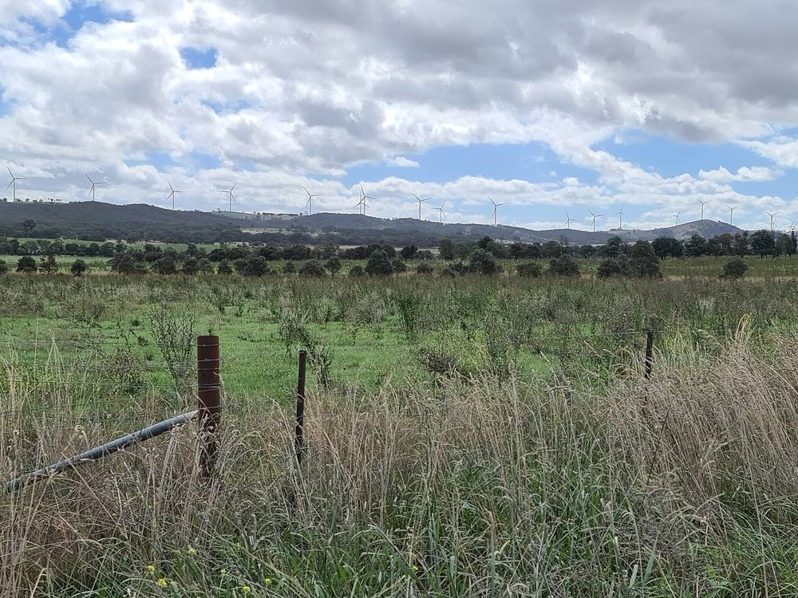
일본 야마가타 사카타서 '지역에 뿌리내린 영농형 태양광' 심포지엄…"매일 전기 짜 주는 젖소 같다"
요네자와 농민 35아르 논에 눈 고장용 수동식 패널 670장…원전 사고로 떠났던 후쿠시마 농민은 영농형으로 농업 복귀, "사람 없는 중산간지에 사람 부를 가치"

일본 사가시, 시가 52% 출자한 지역 전력회사 세워…청소공장 전기를 공공시설 113곳에 직접 판다
자본금 5,000만 엔 중 시 2,600만 엔·민간 6개사 400만 엔씩…연 약 1만6,000MWh 판매, 시 밖으로 새던 전기요금 지역에 남긴다

대전시, 17일 재생에너지 정책 포럼…'태양광 가치를 지역과 나누는' 시민 참여형 모델 찾는다
세계태양광총회 특별세션으로 에너지자립마을·산단 지붕 태양광 사례 발표…에너지연·한전KDN과 분산에너지 협약, 특화지역 지정 기반으로

地域
「営農型太陽光を建てても電気を送れない」…全南光州市議会、2028年末完成予定の西霊光変電所の前倒しを要求
朴元鍾委員長、霊光・月坪村など系統接続の遅れを指摘…市「韓電と協議中、陽光所得村はESS・仮想発電所連携のコンサルティング」
大田・ハンバッ総合運動場の公営駐車場太陽光、国費公募に選ばれながら地方費不足で断念…市議会「事業費・容量が資料ごとに違う」
朴恩姫市議、施設管理公団の行政事務監査で「総事業費6億ウォン基準の書類の金額がばらばら」…透明な業者選定手続きを要求
蔚州郡・九英公園公営駐車場の太陽光、17日着工へ…20m先のマンション住民「反射光が心配、撤回を」
郡「反射率5.3%のパネル・傾斜9度、手続きはすべて順守」…住民「郡が立法予告した住宅離隔200mの10分の1」
再エネ自立率1.2%の麗水、太陽光の住宅離隔距離を300m→200mに…道路離隔100m規制は廃止、17日本会議へ
上位法令の9月18日施行から2か月で都市計画条例改正案が常任委で原案可決…「100mまで下げよ」との要求に市は「苦情が多く段階的に」
金海市、公営駐車場・学校・産業団地に太陽光を広げ収益は市民へ…市議会討論会「設置可能な敷地の調査から」
1,000㎡超の公営駐車場への太陽光設置義務化を前に16日に市民討論会…金海は慶尚南道18市郡で電力使用量・駐車場太陽光ポテンシャルともに2位
全北農業技術院、農業振興区域に営農型太陽光を設置する際に農地法の手続きを欠落…道の監査で12件の行政上の処分
2023年に実証設備を建てる際、農地の一時使用協議と開発行為許可を受けず…研究室の安全管理不備・外部講義の未申告で219万5,000ウォンを回収
安城市の「公有地活用・住民参加型太陽光」、地方自治政策大会で受賞…体育施設・公営駐車場に市民協同組合の発電所
13日に国会舍廊斎で市長・郡守・区庁長協議会長賞…近隣の村の参加と収益の村の福祉への活用を審査基準に、今後は仮想発電所で域内企業に安い電気を供給する構想
仁川・永宗区、来年住宅・商店など227カ所に太陽光・地熱の設置費を最大80%支援…「再生エネルギー融複合支援事業」で国・市費26億2,000万ウォン確保
総事業費41億9,000万ウォンのうち補助金35億3,000万ウォン、太陽光192カ所・太陽熱7カ所・地熱28カ所…来年2月から本格推進
牙山市、太陽光の住宅地離隔距離を500m→200mに短縮し道路離隔は撤廃…住民同意の事業はさらに緩和
都市計画条例を改正、進入道路の舗装・畜舎など建築物上の太陽光基準も緩和…「日差し所得村」8カ所で推進中、サムスン投資に伴う電力需要に備え
光州・光山区、温室効果ガスを減らしたマンション6カ所に3,600万ウォン…LED交換・太陽光設置を支援
炭素中立ポイント制の加入率・住民の実践を評価して選定、500世帯以上部門の大賞・新昌都市公社国民賃貸アパートに1,100万ウォン
忠清圏を通る国家基幹送電網27事業…「電力は首都圏へ、累積負担は地域に」住民の声強まる
全国99事業のうち大田・世宗・忠清南道関連が27、セマングム2～新瑞山約121kmなど2030～2036年竣工目標…政府「鉄塔最大2,214基削減」案でも村ごとの負担・地中化区間の基準はまだ
保寧市「西海岸エネルギー高速道路の新規送電線に原則反対」…青羅・嵋山・聖住面は345kV3路線すべてが通過
鉄塔270基・130基・230基の計画…脱石炭地域の送電余力活用・地産地消・経過地への系統連系優先権を要求
甕津郡守「島の再エネ、系統接続が最大の課題」…霊興・内7里の「日差し所得村」を再推進
白翎島で7月に2,600世帯が最大8時間停電…洋上風力の背後港湾・送配電網の準備遅れ「国・仁川市・郡で共に解決を」
羅州湖の水上太陽光、事業者「20年間で373億ウォンを地域還元」…反対側は「周遊路の景観を守るべき」
97.8MWのうち19.56MWを共生寄与分に、茶道面の住民1,700人が対象…瑞山大湖湖は累計発電収益53億8,700万ウォン
米カリフォルニア州ヒューニーミ港、913kWの駐車場太陽光が稼働…港は初期費用なしで年140万kWh
自動車待機エリアの上に屋根型発電所…250世帯分の電力、2030年の港湾運営ゼロ排出目標に寄与
蔚山の750MW浮体式洋上風力「文武バラム」の親会社、25日に清算可否の株主総会…資金確保がカギ
スウェーデンのヘキシコン、取締役会は存続を提案も「運転資金調達に重大な不確実性」と明記…監査人は意見を表明せず
英コベントリー市、E.ONとグリーンベルトに25MW太陽光を推進…市議「E.ONがいくら稼ぐか公開を」
7,000世帯分の電力・事業費はE.ON負担、市は所有地の賃料と電力購入を検討…2カ所目の用地も物色
朴燦大仁川市長、オーステッド経営陣と面会も…漁業者「協議体を断ち市長とだけ会談」と反発
1.47GWの仁川洋上風力、許可から3年停滞・入札も保留…環境団体「まず専任組織を」、市「具体的協議のない表敬の場」
全北道、飽和した送電網の解消へESS・仮想発電所企業と連携…「太陽光所得村も接続が鍵」
LSエレクトリック・韓電全北本部などと事業モデル懇談会、送変電設備・ESS拡充を国家計画に反映するよう建議
J1水戸ホーリーホック、耕作放棄地で営農型太陽光…道の駅の電力3割を供給し2年目で黒字
茨城県城里町の約2,000㎡に67.2kW、20年固定価格のPPA…Jリーグは1クラブ上限1,000万円の再エネ助成
ソウルエネルギー公社、黒字転換も顧客満足度は79.4点…市議会「LNG依存から脱し駐車場太陽光を拡大せよ」
魏聖燦ソウル市議が行政監査で指摘…公営駐車場40カ所の立地調査を確実に、大型民間駐車場とも協議を
全南光州都市開発エネルギー公社の本社はどこに…全南開発公社労組「務安に」、光州都市公社労組「条例もまだなのに時期尚早」
22の傘下機関を11に統合推進…7機関の条例案を来月16日までの定例会で審査
慶尚南道の学校366校に太陽光497基、小さいもので3kW・大きいもので563kW…道議会「188倍の格差、低容量・老朽設備の改善を」
平均68kW…慶尚南道議会教育委員会、行政事務監査の最終日に教育庁へ改善策を要求
南原市議会・盧賢以議員、公営駐車場の太陽光収益を市民に還元する条例の発議へ…討論会で協同組合モデルを議論
10日の「公営駐車場の太陽エネルギー住民所得化方策討論会」に市民・専門家約30人…全州市エネルギーセンター・環境運動連合・共同体支援センターが発表
フィリピン・ケソン市、2年足らずで太陽光容量を73%増やし58.55MWに…市庁舎・公立学校・市立病院の屋根から設置も、家庭への普及は1%未満
シンクタンクICSCが衛星画像と機械学習で分析、95%超が屋根置き…屋根の潜在量は4,916MW、「家庭・零細事業者の初期費用を軽くする金融と許認可が必要」
ソウルエネルギー公社、昨年の太陽光事業の執行率77%…チェ・ドゥホ市議「老朽設備の交換・都心太陽光拡大の年次別実行計画を出せ」
公社「運営期間を終えた発電用地を引き継ぎ高効率化し、公営駐車場の太陽光を段階的に拡大」…EV充電器の委託業者の賃金未払いで管理が1日止まった件も追及
江原道が108億ウォンを現物出資した大関嶺風力団地、年間純利益3億ウォンにとどまる…道議会の監査で「経済性と住民被害を改めて検証せよ」
江原開発公社が運営する団地の予想売上は21億ウォン…維持補修費や人件費が上がれば収益はさらに減る恐れ、騒音・低周波・シャドーフリッカーなど社会的費用も指摘
ソウルの学校3校の屋根で市民太陽光協同組合が運営する発電所、使用料1,470万ウォン滞納…学校ごとに対応ばらばら
ソウル市議会の行政監査で指摘…仁憲高は使用許可を取り消し、上院小は督促文書を11回送っただけ、協同組合型20校・民間型12校の安全点検を要求
海南・血島干拓地の国内最大400MW太陽光、着工式から3カ月たっても工事の跡なし…住民160人余り「埋立免許は無効」と行政訴訟
住民の持ち分は発電事業費の4%まで…海南の干拓地の大型太陽光は11件1,785MW、郡は「年末までに利益還元の細部指針」
麗水市、有人島40カ所のエネルギー転換「2030 RE40」を推進…2027年から島にも公有地太陽光・太陽光所得村
系統連系の島25カ所・非連系の島15カ所に合わせた実行案…ディーゼル発電を減らし島民の電気料金負担を軽く
九州の営農型太陽光、5年で4.4倍…全国の設置農地の24%は収穫2割超減で国が許可条件を強化
福岡・八女の茶畑は棚がけにパネルを組み合わせ月7万〜8万円…農水省「遮光率30%未満・年販売50万円以上」の新条件に業界は「一律規制は厳しすぎる」
始興型RE100、産業団地の小規模事業者1,068社が電子投票で屋根置き太陽光を決定…20年で太陽光所得180億ウォン見込み
スティールランド1万2,613kW・賛成86%、市民協同組合の駐車場発電所394kWが稼働…太陽光の許可容量は2023年末の44MW→129MW
コロラド初のプラグイン太陽光非営利団体が発足…賃借人・管理組合規約を保護する州法の施行を前に
ソーラー・アクセス・コロラドが9日に発足…HB26-1007、設置を合理的理由なく妨げられないと規定
BHESCo、イーストボーン全域へ「ソーラー・パワード・コミュニティーズ」を拡大…電気料金を最大25%安くすることを目標に
持ち家世帯・賃借人・地域の事業所が対象…オフジェムのエネルギー補償基金で運営
シェトランドの地域エネルギー関係者「スコットランドの地域エネルギー支援金を複数年で支給してほしい」
秋に配分されるCARES資金は翌年3月中旬までに使う必要…大きな事業を小分けにし、工事が冬に集中
ドイツ「エネルギー・シェアリング同盟」、隣近所で太陽光の電気を分け合う障害を除く11の提案…「配電会社に処理期限と罰則を」
6月から法律で認められたが、精算手続き・スマートメーター普及の遅れ・高いコストで停滞…協同組合や市民エネルギー団体には「複雑すぎるか採算が合わない」
「裸足の大学」創設者バンカー・ロイ氏死去…学校に通えなかった農村の女性たちを太陽光技術者に育てた81年
1972年にインド・ラジャスタン州ティロニアに設立した学校で学んだ女性たちが故郷の村に戻り、太陽光照明を設置・運営・保守…多くの国の女性も学びに訪れる
アイルランド・コークの隣人たちが「ソーラー・メハル」で屋根の太陽光を共同設置…先行した団地は1世帯あたり年約1,000ユーロ節約
隣人が集まって大仕事を助け合う伝統「メハル（meitheal）」を太陽光の共同購入に応用…ボランティアグループ「ノースサイド・ソーラー」、団地ごとに使い回せる方式をつくり北部地域に広げる計画
忠北開発公社、陰城郡の公営駐車場に初の公共主導型太陽光…発電純利益の50％を20年間郡に還元
韓電KDNと共同で設立する特別目的法人「忠北ソーラーリンク」がカーポート型設備を運営、郡は用地と行政を支援…「忠北型標準モデル」として道内の他市郡に拡大へ
豪研究者「再エネの地域便益は一時的な支援でなく長く残る遺産に」…地域基金は2030年に2億1,300万豪ドルの見通し
シドニー工科大学の分析「地元雇用の効果はまだはっきりしない」…先住民への持ち分・収益5％共有の入札枠、地元研修、営農型太陽光の計画上の位置づけを提案
山形・酒田で「地域に根ざす営農型太陽光」シンポジウム…「毎日電気を出してくれる牛と同じ」
米沢の農家が35アールの水田に雪国向け手動式パネル670枚…原発事故で離農した福島の農家は営農型で農業に復帰、「人のいない中山間地に人を呼ぶ価値」
佐賀市、市が52％出資する地域新電力を設立…清掃工場の電気を公共施設113カ所へ直接販売
資本金5,000万円のうち市が2,600万円・民間6社が400万円ずつ…年約1万6,000MWhを販売、市外に流れていた電気料金を地域に残す
韓国・大田市、17日に再生可能エネルギー政策フォーラム…「太陽光の価値を地域と分かち合う」市民参加型モデルを探る
世界太陽光会議の特別セッションとしてエネルギー自立村・産業団地屋根置き太陽光の事例を発表…エネルギー技術研究院・韓電KDNと分散型エネルギー協定、特化地域指定の足がかりに
地方
“农光互补建好了却送不出电”…全南光州市议会要求提前建成原定2028年底完工的西灵光变电站
朴元钟委员长列举灵光月坪村等并网延迟案例…市政府：“正与韩电协商，阳光收入村将做储能、虚拟电厂衔接咨询”
大田韩밭综合运动场公共停车场光伏：入选国家补助项目却因地方配套资金不足而放弃…市议会：“各份材料的事业费和容量不一致”
朴恩姬市议员在设施管理公团行政事务监察中指出“以总事业费6亿韩元为基准的文件金额各不相同”…要求建立透明的企业遴选程序
蔚州郡九英公园公共停车场光伏17日开工…20米外公寓居民：“担心反光，请撤回”
郡政府：“采用反射率5.3%的组件、倾角9度，程序全部合规”…居民：“只有郡政府立法预告的住宅间距200米的十分之一”
可再生能源自给率仅1.2%的韩国丽水，光伏与住宅间距从300米缩至200米…取消道路间距100米限制，17日全体会议表决
上位法令9月18日施行两个月后，城市规划条例修正案在常任委员会原案通过…对"再降到100米"的要求，市政府称"投诉多，需分阶段"
韩国金海拟在公营停车场、学校和产业园区扩大光伏，收益回馈市民…市议会讨论会："先调查可安装用地"
面积1,000平方米以上公营停车场将强制安装光伏，16日召开市民讨论会…金海用电量和停车场光伏潜力均居庆尚南道18个市郡第二
全北农业技术院在农业振兴区设农光互补设施时遗漏农地法程序…道政府审计作出12项行政处分
2023年建设示范设施时未办理农地临时使用协商和开发行为许可…研究室安全管理不善、外部授课未申报，追回219万5,000韩元
安城市“公有土地居民参与型太阳能”获地方自治政策大会奖…在体育设施、公营停车场建市民合作社电站
13日在国会舍廊斋获市长郡守区厅长协议会会长奖…以周边村庄参与和收益用于村庄福利为评审标准，今后拟通过虚拟电厂向本地企业廉价供电
仁川永宗区明年为住宅、商铺等227处补贴最多80%太阳能和地热安装费…“可再生能源融合支援事业”获国家和市级资金26亿2,000万韩元
总事业费41亿9,000万韩元中补贴35亿3,000万韩元，太阳能192处、太阳热7处、地热28处…明年2月全面推进
牙山市将光伏与住宅区间距由500米缩至200米并取消道路间距…经居民同意的项目可进一步放宽
修订城市规划条例，同时放宽进场道路铺装及畜舍等建筑屋顶光伏标准…8个“阳光收入村”推进中，应对三星投资带来的电力需求
穿越忠清圈的国家骨干输电网项目达27个……居民呼声渐高："电力送往首都圈，累积负担留在地方"
全国99个项目中27个与大田、世宗、忠清南道相关，新万金2—新瑞山约121公里等计划2030—2036年竣工……政府提出"最多减少2,214座铁塔"，但各村负担与地下化区段标准仍未明确
保宁市：“原则上反对西海岸能源高速公路新建输电线路”…青罗、嵋山、圣住面三条345kV线路全部经过
计划建设铁塔270座、130座、230座…要求利用退煤地区输电余量、就地生产就地消费、给予途经地区并网优先权
罗州湖水上光伏开发商：“20年返还地方373亿韩元”…反对方：“必须守住环湖步道景观”
97.8MW中19.56MW作为共生贡献份额，面向茶道面1,700名居民；瑞山大湖湖累计发电收益53亿8,700万韩元
日本J1球队水户蜀葵在弃耕地建农光互补电站…供应公路休息站30%电力，第二年实现盈利
茨城县城里町约2,000平方米、67.2kW，签订20年固定价格购电协议…J联赛为每家俱乐部提供最高1,000万日元可再生能源补贴
庆尚南道366所学校装有497套太阳能设备，小的3kW、大的563kW…道议会：“相差188倍，应改善低容量和老旧设备”
平均68kW…庆尚南道议会教育委员会在行政事务监察最后一天要求教育厅拿出改善方案
南原市议员卢贤以推动制定条例，将公营停车场太阳能收益返还市民——讨论会探讨合作社模式
10日“公营停车场阳光能源居民增收方案讨论会”约30名市民和专家出席，全州市能源中心、环境运动联合、共同体支援中心作报告
菲律宾奎松市不到两年太阳能装机增长73%至58.55MW…从市政厅、公立学校和市立医院屋顶起步，但家庭普及率不足1%
智库ICSC用卫星图像和机器学习分析，95%以上为屋顶光伏…屋顶潜力达4,916MW，"需要减轻家庭和小商户初期成本的融资与审批"
首尔能源公社去年太阳能项目执行率仅77%…市议员崔斗浩："提交老旧设备更换和城区太阳能扩建的年度实施计划"
公社："将接手运营期满的发电用地改为高效设备，并分阶段扩大公共停车场太阳能"…电动车充电桩外包商拖欠工资导致管理中断一天也遭质询
江原道以108亿韩元实物出资的大关岭风电场年净利润仅3亿韩元…道议会监察："重新审视经济性和居民受害"
江原开发公社运营的风电场预计年销售额21亿韩元…维修费和人工成本上涨可能进一步压缩利润，噪音、低频、阴影闪烁等社会成本也被提及
首尔3所学校屋顶上的市民太阳能合作社电站拖欠使用费1,470万韩元…各校应对不一
首尔市议会行政监察指出：仁宪高中已撤销使用许可，上院小学仅发出11次催缴公函；要求对20所合作社型、12所民营型学校设施进行安全检查
韩国海南血岛围垦地400MW国内最大光伏项目，开工仪式三个月后仍无施工迹象…160余名居民提起行政诉讼要求"填海许可无效"
居民份额上限为发电项目费用的4%…海南围垦地大型光伏共11个、1,785MW，郡政府称"年底前出台利益返还细则"
日本九州农光互补5年增至4.4倍…全国装设农地24%减产逾两成，政府收紧许可条件
福冈八女茶园将遮光棚与光伏结合，月收7万~8万日元；农林水产省新设"遮光率低于30%、年销售50万日元以上"条件，业界称"一刀切过严"
始兴型RE100：产业园区1,068家小商户电子投票决定屋顶光伏，预计20年阳光收入180亿韩元
Steelland 1万2,613kW、赞成率86%；市民合作社停车场电站394kW投运；光伏许可容量由2023年底的44MW增至129MW
德国"能源共享联盟"提出11项建议，清除邻里共享光伏电力的障碍："给配电公司设处理期限和罚则"
自6月起已获法律允许，却受困于结算程序、智能电表推广迟缓和高成本；对合作社和市民能源团体而言"过于复杂或不划算"
“赤脚学院”创始人邦克·罗伊逝世…81年人生把从未上过学的乡村妇女培养成太阳能技师
1972年在印度拉贾斯坦邦蒂洛尼亚创办学院，学成的妇女回到家乡村庄安装、运营和维护太阳能照明…多国妇女也前来学习
爱尔兰科克邻居们以“太阳能互助（Solar Meitheal）”共同安装屋顶光伏…先行小区每户每年节省约1,000欧元
把邻里齐心协力完成大事的传统“meitheal”用于光伏团购…志愿团体“北区太阳能”打造可在各小区重复使用的模式，计划推广到北部地区
忠北开发公社在阴城郡公营停车场建首个公共主导型光伏…发电净利润50%在20年内返还郡政府
与韩电KDN共同设立的特殊目的法人“忠北Solar Link”运营车棚式设备，郡政府提供用地与行政支持…将作为“忠北型标准模式”推广至道内其他市郡
澳大利亚研究人员："可再生能源的地方收益应是持久遗产而非一时甜头"…社区基金2030年预计达2亿1,300万澳元
悉尼科技大学分析称"本地就业效果尚不明显"…建议原住民股权与收益5%共享招标、本地培训，并在规划中承认农光互补
日本山形县酒田市举办"扎根地方的农光互补"研讨会…"就像每天产电的奶牛"
米泽农民在35公亩稻田上架设670块适应雪国的手动式光伏板…因核事故离农的福岛农民借农光互补重返农业，"为无人的山区丘陵地带招来人气"
日本佐贺市成立市政府出资52%的地方电力公司…将清扫工厂电力直接售给113处公共设施
注册资本5,000万日元中市政府出资2,600万日元、6家民企各400万日元…年售电约1万6,000兆瓦时，把流向市外的电费留在本地
韩国大田市17日举办可再生能源政策论坛…探索"与地方共享光伏价值"的市民参与型模式
作为世界光伏大会特别会议发布能源自立村、产业园屋顶光伏案例…与能源技术研究院、韩电KDN签署分布式能源协议，为申请特区打基础
Regions
"Agrivoltaics Built but Unable to Export Power": Jeonnam-Gwangju Council Urges Earlier Completion of West Yeonggwang Substation Due in Late 2028
Committee chair cites grid connection delays at Wolpyeong village in Yeonggwang — city says it is in talks with KEPCO and plans ESS and virtual power plant consulting for sunlight income villages
Daejeon Stadium Car-Park Solar Won a National Grant, Then Was Dropped for Lack of Local Funds; Councillor Says Cost and Capacity Differ by Document
Councillor Park Eun-hee tells the facilities corporation that figures based on a KRW 600 million budget do not match across filings, and calls for a transparent supplier selection process
Ulju County to Break Ground on Car-Park Solar on the 17th; Residents 20 m Away Demand Withdrawal over Glare
County: 5.3% reflectance panels at a 9-degree tilt, all procedures followed — Residents: one-tenth of the 200 m setback the county itself has proposed
Yeosu, at 1.2% renewable self-sufficiency, cuts solar setback from homes to 200 meters and scraps 100-meter road rule; final vote Nov. 17
Council committee passes zoning ordinance amendment two months after national rules took effect Sept. 18; city rejects call to go down to 100 meters, citing complaints
Gimhae weighs solar on car parks, schools and industrial parks with profits returned to residents; council forum urges site survey first
Forum held Nov. 16 ahead of mandatory solar on public car parks over 1,000 square meters; Gimhae ranks second of 18 South Gyeongsang cities and counties in both power use and car-park solar potential
Jeonbuk Agricultural Research Institute skipped farmland law procedures when installing agrivoltaics in an agricultural promotion zone; provincial audit issues 12 administrative actions
No temporary farmland-use consultation or development permit for its 2023 demonstration array; 2.195 million won recovered over lab safety lapses and unreported outside lectures
Anseong's resident-participation solar on public land wins local government policy award; citizen co-ops build plants on sports facilities and public car parks
Award from the national council of mayors and county heads at the National Assembly on the 13th; operators judged on nearby villages' participation and use of profits for village welfare, with a future virtual power plant to supply cheap power to local firms
Incheon's Yeongjong-gu to cover up to 80% of solar and geothermal installation costs at 227 homes and shops next year after securing 2.62 billion won in national and city funds
Of the 4.19 billion won total, 3.53 billion won is subsidy; 192 solar, 7 solar thermal and 28 geothermal sites, with work starting in earnest in February
Asan cuts solar setback from homes to 200m from 500m and scraps road buffer, with further easing for projects residents back
Revised city planning ordinance also relaxes access-road paving and rooftop-solar rules for livestock buildings; eight "sunlight income villages" under way as Samsung investment drives power demand
Gwangju's Gwangsan district awards 36 million won to six apartment complexes that cut emissions, funding LED and solar upgrades
Winners chosen on carbon-neutral point sign-up rates and residents' efforts; top prize in the 500-plus-household category, a public rental complex in Sinchang, gets 11 million won
27 national grid projects cross the Chungcheong region as residents say "the power goes to Seoul, the burden stays here"
Of 99 backbone grid projects nationwide, 27 involve Daejeon, Sejong and South Chungcheong, including the roughly 121km Saemangeum 2–Sinseosan line due between 2030 and 2036; a government plan to cut up to 2,214 towers leaves village-level burdens and undergrounding sections unclear
Boryeong says it opposes new West Coast 'energy highway' power lines in principle; three 345kV routes cross the same townships
Plans call for 270, 130 and 230 towers; city wants spare post-coal grid capacity used first, local use of local power and grid priority for affected areas
Ongjin County head says grid connection is the biggest hurdle for island renewables; Sunlight Income Village push at Nae 7-ri resumes
About 2,600 households on Baengnyeong Island lost power for up to eight hours in July; offshore wind port and transmission lagging, county wants joint action with Seoul and Incheon
Naju Lake floating solar developer offers 37.3 billion won to locals over 20 years; opponents say lakeside scenery must be preserved
19.56MW of the 97.8MW plant set aside as a community contribution for 1,700 Dado-myeon residents; Seosan's Daeho Lake plant has earned 5.387 billion won so far
Solar to cover Eumseong public car parks, built by KEPCO KDN-Chungbuk Development SPC with profits for vulnerable households
Three bodies sign agreement on the 10th; special purpose company Chungbuk Solar Link raises funds to spare county budget
California's Port of Hueneme switches on 913 kW solar carport at no upfront cost
Canopy over the vehicle staging area will produce 1.4 million kWh a year, enough for 250 homes, and support the port's 2030 zero-emissions goal
Parent of Ulsan's 750 MW floating offshore wind project Munmu Baram to vote on liquidation on the 25th; funding is key
Sweden's Hexicon board proposes continuing but cites 'material uncertainty' over working capital; auditor declines to give an opinion
Coventry pursues 25 MW green belt solar farm with E.ON — councillors demand to know what the company earns
Scheme would power over 7,000 homes at no cost to the council, which eyes higher rent and possible power purchase; search on for a second site
North Jeolla turns to batteries and virtual power plants as grid congestion blocks even village solar
Province meets LS Electric, other firms and KEPCO to link flexible-connection and grid-battery policies to local projects
Haman County teams up with local public corporation to put solar on three public car parks, aiming for 2030 completion
Preparing for the renewable-energy mandate on public car parks over 1,000㎡; county handles administration, corporation builds and runs the plants
Incheon mayor meets Ørsted executives, but fishers object: 'They shut the council and met only the mayor'
1.47GW Incheon offshore wind project stalled three years after permit, bid on hold; green group says build a dedicated team first, city calls it a courtesy visit
Jeonbuk turns to batteries and virtual power plants to unclog its saturated grid — 'solar income villages also hinge on connection'
Province meets LS Electric, KEPCO's Jeonbuk office and others; will ask for substation and storage upgrades in national plans
Haman County to put solar on three public car parks, with its local public corporation building and running them by 2030
Hamju Park, Haman Sports Center and Chilwon Guseong sites chosen ahead of mandate for public car parks over 1,000㎡
Incheon to put 5.7 MW of solar on two water treatment plants under public-private agreement
City development corporation, waterworks headquarters and private firm JH Energy sign implementation deal; council vote expected in first half of next year
Japanese J1 club Mito HollyHock farms and generates on abandoned land, supplying 30% of a roadside station's power
67.2kW solar sharing plant on about 2,000 square metres in Shirosato, Ibaraki, sells power under a 20-year fixed-price PPA and turned a profit in its second year; J.League offers clubs up to 10 million yen
Seoul Energy Corp. returns to profit but customer satisfaction slips to 79.4; council member urges more parking-lot solar
City council audit calls for cutting dependence on LNG, finishing site surveys at 40 public car parks and talks with large private lots
Where should the new Jeonnam-Gwangju urban development and energy corporation be based? Unions split between Muan and 'too early'
Plan to merge 22 affiliated bodies into 11; council to review ordinances for seven agencies at session ending next month's 16th
South Gyeongsang's 366 schools host 497 solar systems ranging from 3kW to 563kW; council says '188-fold gap, fix small and ageing units'
Average size 68kW; provincial council's education committee presses education office for improvement plan on last day of audit
Jeju cuts offshore wind goal from 10GW to 5GW, but councillors ask where islanders' share has gone
Governor Wi says the province will choose new sites and put resident consent first; debate over grid routing and local industry continues
Cuyahoga County to borrow up to $7.5 million to expand landfill solar, with notes bought by regional energy council NOPEC
Federal tax credits are expected to repay the principal, backed by a property-tax pledge if the money is late
Namwon councillor moves to legislate returning public car park solar income to citizens after forum on cooperative model
About 30 residents and experts attend Nov. 10 forum; Jeonju energy centre, Korea Federation for Environmental Movements and local community centre present
Quezon City Grows Solar Capacity 73% to 58.55MW in Under Two Years, Starting With City Hall, Public Schools and City Hospitals, but Household Uptake Remains Below 1%
Think tank ICSC's satellite and machine-learning analysis finds over 95% is rooftop; with rooftop potential of 4,916MW, it calls for financing and permitting that ease upfront costs for households and small businesses
Seoul Energy Corporation Spent Only 77% of Last Year's Solar Budget; Councillor Choi Doo-ho Demands Year-by-Year Plans to Replace Old Panels and Expand Urban Solar
The corporation says it will take over sites whose operating terms end, refit them with high-efficiency equipment and gradually add solar to public car parks; unpaid wages at an EV-charger maintenance contractor that halted work for a day were also criticised
Daegwallyeong Wind Farm, Backed by 10.8 Billion Won of Gangwon Province Assets, Earns Only 300 Million Won a Year; Provincial Councillors Call for Review of Economics and Harm to Residents
The farm run by Gangwon Development Corporation expects 2.1 billion won in annual revenue; rising maintenance and labour costs could cut profit further, and noise, low-frequency sound and shadow flicker were raised as social costs
Citizen Solar Co-op Owes 14.7 Million Won in Rent for Rooftop Plants at Three Seoul Schools, and Each School Is Handling It Differently
Seoul council audit flags the arrears: one high school revoked its permit, an elementary school sent 11 reminder notices; councillor calls for safety checks at 20 co-op and 12 private school installations
Korea's Largest Planned Solar Park on Haenam's Hyeoldo Reclaimed Land Shows No Work Three Months After Groundbreaking, as 160 Residents Sue to Void Land Reclamation License
Residents can hold at most 4% of project costs; 11 large solar projects on Haenam reclaimed land total 1,785MW, and the county promises benefit-sharing guidelines by year-end
Yeosu Launches '2030 RE40' Energy Transition for Its 40 Inhabited Islands, Bringing Public-Land Solar and Sunlight Income Villages from 2027
Separate plans for 25 grid-connected and 15 off-grid islands aim to cut diesel generation and islanders' power bills
Agrivoltaics in Japan's Kyushu Up 4.4-Fold in Five Years, but 24% of Solar Farmland Nationwide Saw Big Harvest Losses, Prompting Stricter Rules
A Yame tea farm combines shade frames with panels to earn ¥70,000–80,000 a month; industry calls the new "under 30% shading, ¥500,000 annual crop sales" conditions too rigid
Siheung RE100: 1,068 Small Businesses in an Industrial Estate Vote for Rooftop Solar, Expecting ₩18 Billion in Sunlight Income over 20 Years
Steelland's 12,613kW backed by 86%; a citizen co-op's 394kW car park plant is running; licensed solar capacity up from 44MW at end-2023 to 129MW
Colorado's First Plug-In Solar Nonprofit Launches Ahead of State Law Protecting Renters and HOA Residents
Solar Access Colorado launched on 9 November; HB26-1007 bars unreasonable bans on installation
BHESCo Extends Its Solar Powered Communities Programme to All of Eastbourne, Aiming for Electricity Up to 25% Cheaper
Homeowners, tenants and local businesses can all take part; programme runs on the Ofgem Energy Redress Scheme
Shetland Community Energy Workers Urge Scottish Government to Fund Community Energy Over Several Years
CARES money awarded in autumn must be spent by mid-March, forcing big projects into smaller phases and pushing construction into winter
Gangwon Provincial Council Says Sunlight Income Villages Need Grid Access First, and Reviews Yanggu Daeamsan Wind Siting
Councillor Lee Byeong-gu presses for grid connection on the 46-village, 92.4 billion won programme during an audit of the industry bureau
Germany's Energy Sharing Alliance Puts Forward 11 Proposals to Clear the Hurdles to Neighbours Sharing Solar Power: "Deadlines and Penalties for Grid Operators"
Allowed by law since June but held back by settlement processes, slow smart meter rollout and high costs; for cooperatives and citizen energy groups it is "too complicated or uneconomic"
Barefoot College Founder Bunker Roy Dies at 81, After Decades Training Rural Women Who Never Went to School as Solar Engineers
Women trained at the college he founded in Tilonia, Rajasthan, in 1972 returned to their villages to install, run and maintain solar lighting, and women from many other countries came to learn
Cork Neighbours Install Rooftop Solar Together Through a 'Solar Meitheal'; First Estate Saves Around 1,000 Euros a Year Per Household
Volunteer group Northside Solar applies the Irish tradition of neighbours tackling big tasks together to group solar purchases, building a reusable model to roll out estate by estate across Cork's northside
Chungbuk Development Corporation to Build First Public-Led Solar Over Eumseong Car Parks, Returning Half of Net Profit to County for 20 Years
Special purpose company 'Chungbuk Solar Link', set up with KEPCO KDN, will run canopy panels while the county provides sites and administrative support; the model is to be extended to other cities and counties in the province
Australian Researchers Say Renewables Must Leave Regions "a Lasting Legacy, Not a Sugar Hit"; Community Benefit Funds Forecast to Reach A$213 Million by 2030
University of Technology Sydney analysis finds local jobs impact not yet clear; proposes First Nations equity and 5% revenue-sharing tenders, local training and planning recognition for agrivoltaics
Symposium in Sakata, Yamagata, on "Community-Rooted Agrivoltaics": "It's Like a Cow That Gives Electricity Every Day"
Yonezawa farmer grows rice under 670 snow-country manual panels on 35 ares of paddy; Fukushima farmer who quit after the nuclear accident returned to farming through agrivoltaics; "value in bringing people to depopulated hill areas"
Japan's Saga City Sets Up Local Power Company With 52% Municipal Stake to Sell Waste-Plant Electricity Directly to 113 Public Facilities
Of ¥50 million in capital, the city put in ¥26 million and six private firms ¥4 million each; about 16,000 MWh a year to be sold, keeping power bills that used to leave the city in the local economy
Daejeon to Hold Renewable Energy Policy Forum on 17 November, Seeking a Citizen-Participation Model That "Shares Solar's Value With the Community"
Special session of the World Conference on Photovoltaic Energy Conversion to showcase an energy self-reliant village and industrial-park rooftop solar; city signs distributed-energy pact with KIER and KEPCO KDN toward special-zone designation